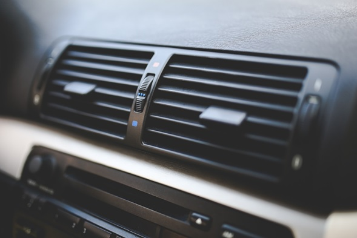

Algunos de los factores más influyentes que afectan la eficiencia de combustible de un vehículo dependen de cosas como el tamaño del motor o el peso de la carga. Sin embargo, la condición mecánica del vehículo, cómo se conduce, el entorno y las condiciones de conducción también contribuyen a la eficiencia general del combustible.
Afortunadamente, el mantenimiento y los hábitos de conducción adecuados pueden ayudarte a mejorar el rendimiento de la gasolina de tu vehículo en aproximadamente un 10%.
Aquí encontraras una guía completa para ayudarte a descubrir lo que ya estás haciendo bien y otras cosas que puedes implementar o mejorar, para obtener el mejor ahorro de combustible posible de tu vehículo y reducir tus costos.
Adopta buenos hábitos de conducción
1. Sigue moviéndote, pero conduce menos.
La mejor manera conocida de reducir el consumo de gasolina y el impacto de tus necesidades de transporte en el medio ambiente es conduciendo menos. Un poco de previsión mejorará tu economía de combustible: intenta satisfacer tus necesidades de viaje con el automóvil que tiene tu familia: viajar en grupo para hacer mandados, trabajar desde casa, andar en bicicleta, caminar o tomar el autobús al trabajo o la universidad.
Y, si tienes dos carros, considera la posibilidad de compartir automóvil o hacer viaje compartido (carpooling), lo que podría ahorrarte el gasto adicional en el automóvil y, al mismo tiempo, permitirte el acceso al vehículo cuando sea necesario.
2. Conduce con sensatez
Los hábitos de conducción agresiva (exceso de velocidad, aceleración rápida y frenado) pueden reducir el rendimiento de la gasolina dentro de la ciudad en un 5% y en un 33% en autopista. Anticípate siempre a las situaciones del tráfico y mantén una distancia adecuada entre tu vehículo y el de adelante para evitar frenadas y aceleraciones innecesarias.
Cuando empieces a acelerar, hazlo suavemente a un ritmo moderado. Conducir con sensatez no solo mejorará tu economía de combustible hasta en un 10%, sino que también es mucho más seguro, por lo que puedes ahorrar más que el dinero de la gasolina.
3. Eliminar el exceso de peso
Revisa tu automóvil y deshazte de elementos innecesarios, especialmente los pesados. Cuanto más ligero sea tu vehículo, menor será su consumo de combustible. Unas 100 libras adicionales en tu vehículo podrían disminuir tu economía de combustible en un 1% o más. El impacto en el consumo de combustible del peso adicional afecta más a los vehículos pequeños que a los más grandes.
4. Evita el ralentí excesivo
Tu automóvil solo usa unos segundos de gasolina cada vez que lo enciendes. Sin embargo, dejar el motor en ralentí durante más de un minuto puede consumir entre un cuarto y medio galón de combustible por hora y bombea CO2 innecesario a la atmósfera.
5. Pon atención al límite de velocidad
Al contrario de lo que se pueda pensar, conducir a una velocidad más alta que la permitida no aumenta el ahorro de combustible. Aunque cada vehículo alcanza su consumo de combustible óptimo en un rango diferente de velocidades, generalmente hay una rápida disminución en el rendimiento de la gasolina a medida que las velocidades superar los 80 kph.
6. Evita ir lentamente hasta alcanzar la velocidad
Conducir demasiado rápido reduce el consumo de combustible, pero también te hace conducir por debajo de la velocidad óptima de tu automóvil. Por debajo de la velocidad óptima, el motor de tu automóvil puede estar haciendo mucho trabajo, pero estar rindiendo muy poco, obteniendo poco impulso de la gasolina que se quema en todos los cilindros en comparado con cuando simplemente se acelera cerca del límite.
7. Transportar carga en el techo del carro
Todo lo que se sujete a la parte superior de un automóvil aumentará el coeficiente de arrastre de tu vehículo, lo que, a su vez, afectará el rendimiento de la gasolina.
Cuanto menor sea este coeficiente de arrastre, más fácil será para tu automóvil deslizarse por el suelo. Pero cuando comienzas a colocar cosas en la parte superior de un vehículo que por lo demás es muy aerodinámico, mayor es la resistencia al aire. Una caja con mercadería o un manojo de maletas amarradas al techo de tu vehículo puede reducir la economía del combustible en un 31%.
8. Utiliza el control de crucero
¿El control de crucero ahorra gasolina? Sí, pero solo en tramos de carretera más planos.
A diferencia de tu pie derecho, que hace un mal trabajo al nivelar la velocidad, el control de crucero te ayuda a mantener una velocidad constante para ahorrar gasolina. Pero si ti forma de manejar es sensata y eficiente, podrás leer y reaccionar a los cambios más rápido que la computadora del automóvil.
9. Calienta tu automóvil durante períodos de tiempo más cortos
Los motores de los automóviles modernos requieren menos tiempo de calentamiento que los modelos más antiguos. Tu carro tiene un sistema de control que calienta el motor lo suficiente como para comenzar a moverse en 10 a 30 segundos. Dejar el motor de tu vehículo en ralentí durante más de un minuto es solo una pérdida de combustible y las desagradables emisiones de gases de efecto invernadero que se bombean al aire.
La manera más inteligente de ahorrar combustible es calentar el motor durante 10 a 20 segundos y luego conducir a baja velocidad durante los siguientes 1 a 3 minutos.
10. Usa las ventanas y el aire acondicionado con prudencia
¿Deberías mantener las ventanas abiertas en el verano para evitar usar que tu aire acondicionado que consume mucha energía, pero aumentar la resistencia del aire, o cerrar todas las ventanas y hacer funcionar el aire acondicionado y minimizar la resistencia del aire? La respuesta es más simple y menos complicada:
La resistencia al aire aumenta cuanto entre más rápido vas. Entonces, si manejas por debajo de 90 kph, abre las ventanas y apaga el aire acondicionado; por encima de 75 kph puedes hacer funcionar tu aire acondicionado con las ventanas cerradas sin afectar el kilometraje.
Espera las siguientes entregas sobre este mismo tema para que aprendas a mejorar tu economía de combustible y a cuidar tu bolsillo al mismo tiempo.